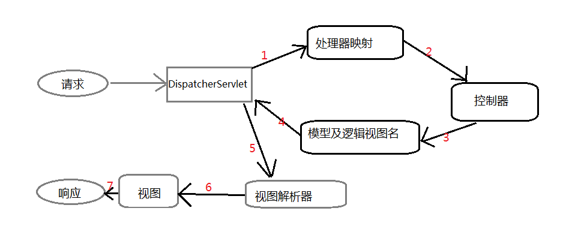

所谓的SSM框架，即为SpringMVC+Spring+Mybatis的组合。其中SpringMVC负责web层，Spring负责service层，Mybatis负责dao层。
Spring 简介
Spring框架是目前应用很广泛的一个框架，主要包括两个重要的理念：IoC（Inversion of Control，控制反转）和AOP(Aspect Oriented Programming，面向切面编程)。
Spring IoC
在Spring中，它会认为一切的Java资源都是Java Bean，而IoC相当于一个容器，用来管理其中的Java Bean。通过XML配置文件来管理Java Bean之间的依赖关系，也就是说需要的资源Bean通过配置文件就可以得到，这就是”控制反转“的含义。
这样做的好处就是功能接口不再依赖于某个实现类， 需要使用某个实现类时我们通过配置信息就能完成。这样如果后期想要修改或者加入其他资源，直接修改配置文件就可以了，不需要再new一个新的对象。
总的来说，就是你不需要去找资源，只要向Spring IoC容器描述所需资源，Spring IoC自己会找到你所需要的资源，这就是Spring IoC的理念。这样就把Bean之间的依赖关系解耦了。
注：Bean的含义
可以理解为bean是一个组件，用于实现某一特定的功能。要实现某个功能时，可以通过调用相关bean来实现。
Spring AOP
Spring AOP常用于数据库事务，在很多情况下，我们在做完第一步数据库更新后，不知道下一步是否成功，如果下一步失败，会使用数据库事务的回滚功能去回滚事务，使得第一步的数据库更新也作废。
在运行过程中，Spring AOP的事务管理判断操作是否成功的依据是——spring是否抛出异常信息。所以实现了Spring AOP之后，如果操作不成功spring只需要抛出异常，就可以回滚事务。所以spring只需要关注业务代码，而不需要关心事务等纷杂的东西了。
Mybatis简介
目前Mybatis的dao层是不需要实现类的，它只需要一个接口和XML。无论Mybatis还是Hibernate都是依靠某种方法，将数据库的表和POJO映射起来，这样程序员才能通过操作POJO来完成相关逻辑。
Mybatis中通常使用XML方式实现映射关系。和Hibernate不同，Mybatis需要我们提供SQL去运行，这样的好处在于程序员能够更加精确的定义SQL，从而优化性能。
需要注意，配置mapper元素的namespace属性，它要和接口的全限定名保持一致，而且里面的SQL的id需要和接口定义的方法完全保持一致，这样Mybatis才能自动映射。
SpringMVC 简介
SpringMVC结构层次清晰，类比较简单，并且可以与Spring的核心IoC和AOP无缝对接，所以使用率大大上升。MVC是指Model+View+Controller，其中
- Model（模型）：封装了应用程序的数据和相关的POJO；
- View（视图）：负责将模型数据渲染到视图上，将数据以一定的形式展现给用户；
- Controller（控制器）：负责处理用户请求，建立适当的模型把它传递给视图渲染。
当用户在web浏览器中点击连接或者提交表单时，请求就开始工作了：

SpringMVC所有的请求都会通过一个前端控制器，即DispatcherServlet，其任务是将请求发送给控制器（controller），所以DispatcherServlet会查询一个或者多个处理器映射器（handler mapping），根据请求数据携带的url信息进行决策，控制器进行逻辑业务处理，处理完成后将模型数据打包，并标出用于渲染输出的视图名，将请求连同模型和视图名发回DispatcherServlet，视图解析器来将逻辑视图名匹配为一个特定的视图呈现。
具体的SSM框架搭建可以参考博客：